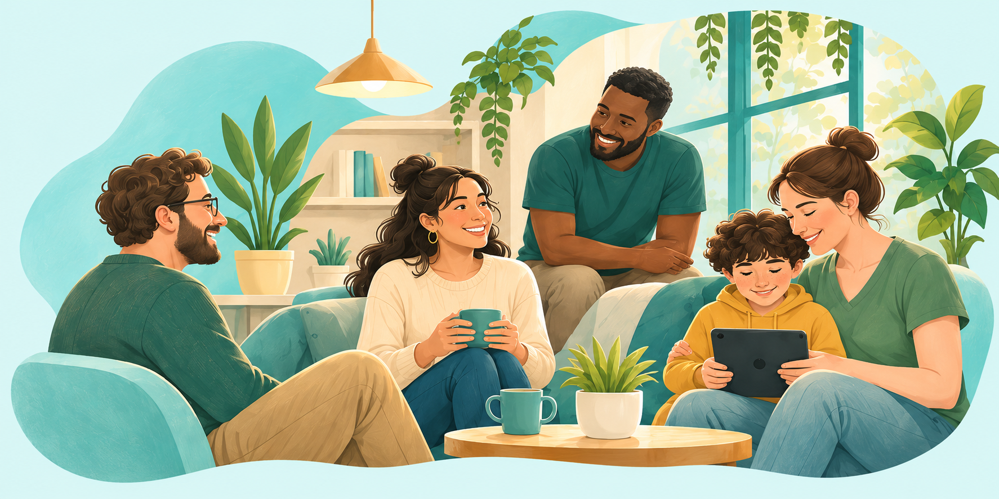

Learning & communication
Exploring digital learning tools that can support understanding, communication and everyday independence.
ExploringA thoughtful beginning
Exploring tools, resources and everyday products for autistic people, families and educators.

Our beginnings
Autler’s is an early-stage initiative exploring how thoughtful technology, accessible information and practical products could support everyday life.
We’re taking time to learn, listen and understand what would be genuinely useful.
Learning first. Listening always.
Explore information and guidance from independent organisations.
Understanding autism, assessments and support.
Explore the guide ↗Practical guidance for learning and everyday life.
Find guidance ↗Perspectives on identity, experiences and inclusion.
Explore perspectives ↗Routes to local services and useful organisations.
Find support ↗Independent resources. Links do not imply affiliation.
Our direction
Possibilities we’re learning about, shaped by real experiences.
Exploring digital learning tools that can support understanding, communication and everyday independence.
ExploringExploring clear, accessible resources that explain, inform and support everyday life for autistic people and those around them.
ExploringExploring practical sensory products that could support individual comfort, preferences and everyday routines.
ExploringWhat is one everyday difficulty you wish a better tool, resource or product could help with?
Your experiences can help guide our next steps.
Our contact channel is being prepared. You can draft a thought below and copy it to keep for later. It is not sent or stored by this website.